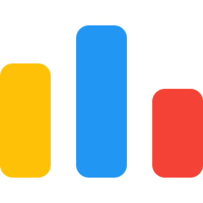
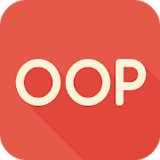

Hi, I am Armando
Computer Science Student
Welcome to my personal web page. Here's some information about me so you can get to know me better and learn about some of my skills as a future software engineer.
About Me
I am a hard worker who is skilled in problem-solving and time management. I take initiative and get things
done on my own as well as with others.
I catch on quickly and work hard to continuously learn new skills.
Some of my abilities include:
• Computational and mathematical thinking.
• Web development (React.js, Node.js, HTML, CSS, mySQL, PostgreSQL and more...).
• Wide knowledge and experience in C++, Python, JavaScript and SQL
• Skills in the use of algorithms and data structure for problem solving
• IELTS: English level B2
Some of my hobbies are:
‚Ä¢ Calisthenics ü§∏ü誂Äç‚ôÇÔ∏è
‚Ä¢ Volleyball üèê
‚Ä¢ Videogames üéÆ
‚Ä¢ Solve LeetCodes ü뮂Äçüíª
Skills


Technologies


Places where I like to suffer


- 
Personal Skills


Projects
Treno
An app designed to train your dog
An electronic that device will keep your dog away from a forbidden place designated by the owner through a high frequency alarm.
All the dog's ativity will be deployed on the client's website along with some statistics and the device information.
Technologies used
Communication System Simulator
A simple bill simulator
This project simulates the environment of a client and the expenses due to the use of the phone, such as internet, calls, and
messages costs.
The simulator receives a text file and returns another text file, simulating a bill
Technologies used

- 

Thaphy
A fun videogame created in 48 hours during the Global Game Jam
Thaphy is a funny mole that wants to get back with his family. During his journey Thaphy will find a stranger. Thaphy decides to help
him and in return the stranger will help him return to his family. After some time, the stranger will be revealed as the Death.
Technologies used

My life at college
An ex Robotics Engineer Student
Name: Jose Armando Rosas Balderas
Tuition: A01704132
Email: A01704132@tec.mx
I am currently studying at the Tecnologico de Monterrey Campus Queretaro. At the beggining I was studying robotics and digital systems,
but I realized that my passion was programming and software. Currently I am enjoying the career very much and I hope to be able to learn
more things and become an engineer in computational technologies.
Preguntas a responder
-
¿Cuál es la diferencia entre Internet y la World Wide Web?
Internet es una red de computadoras conectadas entre sí, mientras que la WWW es una colección de páginas web interconectadas a las que se puede acceder mediante internet
Referencia
-
¿Cuáles son las partes de una URL?
Las partes principales de una URL son las siguientes
- Esquema: Indica el protocolo que debe usar el navegador para transferir datos (http, https, mailto, ftp, etc).
- Subdominio: (www)
- Dominio: Indica el servidor web que es solicitado mediante un nombre o una IP
- Puerto: Indica el punto mediante el que se accederá a los recursos del servidor web
- Ruta: Dirección del recurso en el servidor web (viene después de ‘/’)
- Parámetros: Información transmitida mediante el URL (viene después de ‘?’ y, cuando hay varios, están separados por ‘&’)
- Etiqueta: Permite hacer scroll hasta un elemento en concreto (viene después de ‘#’)
-
¿Cuál es el propósito de los métodos HTTP: GET, HEAD, POST, PUT, PATCH, DELETE?
- Get: Solicitar un recurso del servidor web
- Head: Solicitar que el servidor envíe únicamente el encabezado de la respuesta (sin el archivo)
- Post: Envía datos a una URL
- Put: Pone un recurso dentro del servidor web en la dirección especificada (en caso de no existir lo crea y en caso de haber algo, lo reemplaza)
- Patch: Permite hacer modificaciones parciales a un recurso en específico
- Delete: Permite eliminar un recurso de un servidor web
-
¿Qué método HTTP se debe utilizar al enviar un formulario HTML, por ejemplo cuando ingresas tu usuario y contraseña en algún sitio? ¿Por qué?
Este tipo de formularios pueden ser enviados mediante GET o POST. El más recomendado es este último porque, en lugar de dejar la información ingresada visible en el URL (como es el caso de GET), se incluye dentro del cuerpo de la petición realizada.
Referencia
-
¿Qué método HTTP se utiliza cuando a través de un navegador web se accede a una página a través de un URL?
GET. Ya que este método se utiliza para solicitar un recurso, en este caso una página.
-
Un servidor web devuelve una respuesta HTTP con código 200. ¿Qué significa esto? ¿Ocurrió algún error?
200 significa OK, indica que la solicitud ha tenido éxito.
Referencia
-
¿Es responsabilidad del desarrollador corregir un sitio web si un usuario reporta que intentó acceder al sitio y se encontró con un error 404? ¿Por qué?
404 - Not found. No, ya que este código de error indica un error del cliente y quiere decir que un recurso solicitado no existe o fue removido.
Referencia
-
¿Es responsabilidad del desarrollador corregir un sitio web si un usuario reporta que intentó acceder al sitio y se encontró con un error 500? ¿Por qué?
500 - Internal Server Error. Si porque este error proviene del servidor y no del usuario. Por lo que es responsabilidad del desarrollador.
Referencia
-
¿Qué significa que un atributo HTML5 esté depreciado o desaprobado (deprecated)? Menciona algunos elementos de HTML 4 que en HTML5 estén desaprobados.
Un atributo despreciado/desaprobado está permitido, pero no se recomienda usarlo porque está en proceso de ser reemplazado o eliminado por completo. Algunos ejemplos de esto en HTML5 son APPLET , BASEFONT , CENTER , DIR , FONT , ISINDEX , MENU , S , STRIKE y U.
Referencia
-
¿Cuáles son las diferencias principales entre HTML 4 y HTML5?
- HTML5 tiene más etiquetas que HTML4.
- HTML5 puede realizar más cosas de forma nativa que para HTML4 se necesitaban de programas externos ya obsoletos.
- HTML5 es más dinámico y soporta elementos de video y audio de forma nativa
- HTML5 tiene compatibilidad con navegadores modernos.
-
¿Qué componentes de estructura y estilo tiene una tabla?
ReferenciaEtiqueta Funcion <table> Crear tabla <tbody> Cuerpo de la tabla <th> Celda de cabecera/td> <td> Celda <tr> Fila <col> Referencia a una columna (debe estar en un colgroup) <colgroup> Definir grupos de columnas <caption> Leyenda o título de tabla <thead> Cabecera de la tabla ><tfoot> Pie de la tabla
-
¿Cuáles son los principales controles de una forma HTML5?
ReferenciaEtiqueta Funcion <form> Crear un formulario <input> Campo de texto simple. No permite salto de línea. Puede ser de texto, color, etc <button> Crea un botón que puede ser de diferentes tipos como: submit o reset <textarea> Permite escribir varias líneas de texto <legend> Crea un titulo <fieldset> Permite organizar en grupos los campos de un formulario
-
¿Qué tanto soporte HTML5 tiene el navegador que utilizas?
Calificacion: 476/555
Referencia
Chrome 110 on Windows
-
Sobre el ciclo de vida y desarrollo de los sistemas de información
¿Cuál es el ciclo de vida de los sistemas de información?
- Fase de planificación. En esta fase se prepara el diseño y posterior implementación del sistema
- Fase de análisis. Análisis y donde se busca concretar una serie de requisitos
- Fase de diseño. Determinar cómo el nuevo sistema de información cumplirá con los requisitos aplicables
- Fase de desarrollo. El inicio de la producción
- Fase de integración y periodo de pruebas. El objetivo de esta etapa es corroborar que el diseño propuesto cumple con los requisitos de negocio establecidos
- Fase de implementación. Instalación del hardware y software elegidos, crear las aplicaciones correspondientes, someterlas a pruebas, crear la documentación pertinente y capacitar a los usuarios. sistema
- Fase de mantenimiento. Introducir los ajustes necesarios para mejorar el rendimiento y corregir los problemas que puedan surgir
-
¿Cuál es el ciclo de desarrollo de sistemas de información?
- Estudio de viabilidad
- Análisis del sistema
- Diseño
- Codificación
- Integración
- Pruebas
- Implementación
- Formación
- Mantenimiento y Funcionamientp
-
Como ingeniero de software ¿cuál es tu recomendación sobre el uso de !important en un CSS?
El uso de !important puede ser útil en situaciones muy particulares, pero no es recomendable porque, una vez que se empieza a alterar la jerarquía de css, entre más !important se tengan actualizar el estilo se vuelve cada vez más complejo y confuso.
Referencia
-
Si se pone una imagen de fondo en una página HTML, ¿por qué debe escogerse con cuidado?
Cuando elegimos una imagen de fondo en una página, hay que tener en cuenta los colores de los textos y el color de la imagen de fondo, para no dificultar la visualización del contenido.
-
Como ingeniero de software, ¿cuál es tu recomendación al elegir las unidades de un propiedad de estilo entre %, px y pt?
- % es recomendable para hacer una página responsiva, donde se requiere más flexibilidad
- px para establecer dimensiones, como el de una imagen o contenedor
- pt es usado rara vez y se recomienda para propiedades relacionadas a la fuente de un proyecto
-
¿Por qué el uso de una versión minimizada del CSS mejora el rendimiento del sitio?
Reducir el código CSS mediante la eliminación de espacios innecesarios, líneas en blanco y comentarios, aunque el archivo CSS pierda su estructura y claridad, de esta forma será interpretado por el navegador más rápido.
Referencia
Contact me
If you want to develop a project together, play some videogame or aything, just contact me
Your are also welcome to checkout my linkedIn or my Github